Tour No. 1 (Manali - Local)
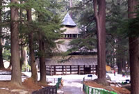Hadimba Temple: Built in 1553 A.D. With a four tiered pagods shaped roof and front doorway, superbly crafted and caved with figures & symbols. The temple is dedicated to Hadimba Devi, wife of Bhima the pandva and is situated amidst the lush green and thick whispering forest of Dhungri, just 1.5 km. from the town.
Tibetan Monasteries: There are two Tibetan monasteries at manali. One can have a closer look on Tibetan art and culture besides having a feet of Buddhism.
Club House: The club house of Himachal tourism with its comprehensive facilities that includes a roller skating ring, an auditorium, a billiard room, a library, a bar and restaurant, make a wonderful place for outing and recreation.
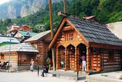Vashisth Rishi Temple & Sulphur Hot Spring: Across the Beas river about 3.2 km. away from town at an altitude of 1982 meters (6200 ft.) just above the famous Manali-Keylong- Leh highway is located the ancient Vashisth Rishi Temple In the premises of the temple is the sulphur hot water spring endowed with great heeling power. The pyramidal temple is dedicated to mythological Vashisth Rishi and another to lord Ram Chandra Ji.
Van Vihar: There is fun park & puddle boating surrounding by deodar trees.
Tour No. 2 (Manali To Rohtang Pass)
Nehru Kund: A spring of clear water named after the Late Prime Minister Pt. Jawahar Lal Nehru who used this water during his stay at manali of just 6 km. from manali on manali-Keylong Leh highway.
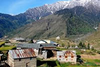Kothi: Kothi is quiet but picturesque spot at the foot of the 13,400 ft. mighty Rohtang pass, about 15 km. away from manali of the famous Manali-Keylong Leh highway.
Gulaba Camp: A picturesque spot rich in herbal plants & flowers. Its beauty is to be seen to be believed.
Rahala Fall: About 27 km. from manali, at the start of the climb to the Rohtang Pass, are the beautiful rahala falls at an altitude 2,501 mts. (8,500 ft.) mother nature excellent creation.
Marhi: Marhi is the last stop on way to mighty Rohtang Pass, located on a green terrace, is an ideal place to relax and enjoy nature. A picnic spot, par excellence. Ever smiling hotels, most of Tibetan origin are there to welcome you with open arms, offering food, drinks and snacks 24 hours services.
Rani Nala: 46 km. from manali. It is a glacier point snow available during whole year.
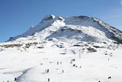Rohtang Pass: Situated about 51 km. from manali at an altitude of 4,111 meters (3,500 ft.) on the Manali Keylong Leh highway. Here one sees the majesty of the mountain at it fresh and splendor. At the top of the pass the air seems to glitter against the snow. As you look down over herringboned ridges in to the Lahaul Valley. One gets awe struck and can't help thinking of him & his creation. There is a beautiful lake left of the pass named Dashour lake where pilgrims go every year to take a holiday on the auspicious day of bhadoon 2oth. The pass remains open from June to October each year although trekkers can cross the pass bit earlier.
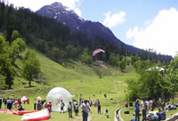Solang Valley: A beautiful picnic spot. Nice meadows surrounded by tree of silver oak and spruce. Famous for international skiing slopes. Beautiful panorama of snow, enjoy horse riding and paragliding.
Tour No. 3 (Manali To Manikaran)
White Water Rafting: Rafting can be done 2-3 spots on this tour. Its starts from Bandrol and last spot being the Pridi. The magic behind rafting is the extreme and never-ending thrill in the untamed rivers. The upper Himalayan rivers are among the best in the world for river rafting sports, with many staircase rapids that challenge the body and spirit of the rafter. For a surge of adrenalin to gush through every vein and surge over every muscle, you can race over the river rapids in an inflatable rubber dingy. River rafting has picked up huge fame in the last few years in Himachal Pradesh.
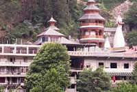Vaishno Temple: A small cave and shrine with an image of goddess vaishno devi. Other temples are dedicated to lord Shiva, Rama and Krishna.
Kullu Shawl Industry: Hand woven shawls and other handicrafts like wall hangings, Kullu caps, Mufflers, Jackets can be purchased from here
Kasol Valley: Charmingly located on open space with slopes down to a broad expanse of clear white sand at edge of the river Parvati.
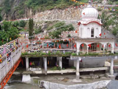Manikaran: Famous for its hot water springs on the bank of the river Parvati. The water is so hot that Dal, Rice etc. can be cooked in it. A well known pilgrimage place on account of ancient Hindu Temple & Gurudwara. According to a legend Manikaran is also associated with lord Shiva and divine consort Parvati who lost and recovered her earring here.
Tour No. 4 (Manali to Naggar & Jana Fall)
Jagatsukh Temple: Famous Shiva Temple Shikhara style and interesting old temple of Gaytri Devi & Sharvali created by Pandvas.
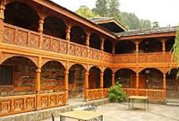Naggar Castle: It is a old capital of Kullu. The Castle was built by Raja Bhosaal. Now under HPTDC. The Castle converted to a Hotel. It is ideal place for tourist and surrounding scenery is very charming.
Roerich Art Gallery: In Naggar art gallery, the Roerich Museum, which houses a collection of the painting of the Russian Artist Nicholas Roerich.
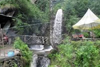Jana Fall: At Naggar after visting Tripura Sundari temple you can proceed towards Jana waterfall. From Manali to Nagar is 20 KM. This waterfall is at a distance of 11.5 KM from Nagar town. The road starts from Nagar Market centre and it goes up and after half KM you have to take right turn and pass through narrow Jungle road with tall pine trees and through Apple gardens . Valley will be towards your right side. Beyond Jana Waterfall This road will further take you to Bijli Mahadev. This is not a big waterfall but the journey upto the waterfall is enjoying and there is a nice restaurant at the waterfall offering you local dishes. During season time ATV ( all tern vehicles ) and Jeep Safari available upto Bijili Manahdev.
Manali, your gateway to another recreation, hiking tours, camping adventures, yoga retreats, pilgrimages, travel planning and much more..
For sheer topographical differences, few places in world are lavishly blessed as Manali. Waterways in profound canyons, thick backwoods, elevated pastures, crests that lie a few thousand meters high and never lose their perpetual snows. At that point past these disallowing statures, lie outwardly dazzling frosty deserts of the Trans Himalaya. This assortment of nature additionally opens tremendous conceivable outcomes for an extensive variety of open air exercises and experience. You should simply make up your mind and select your own particular movement.
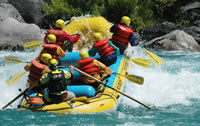River Rafting
River rafting has gained immense popularity in the last few years in Himachal Pradesh. The melting
snow on Himalayas during summers, fill the rivers with water and also provide them the enough speed to
take up rafting challenges. Himachal Pradesh's snow-fed rivers pose the toughest of the challenges to
the rafters. The magic behind rafting is the extreme and never-ending thrill in the untamed rivers.
The upper Himalayan rivers are among the best in the world for river rafting sports, with many
staircase rapids that challenge the body and spirit of the rafter. For a surge of adrenalin to gush
through every vein and surge over every muscle, you can race over the river rapids in an inflatable
rubber dingy. River rafting has picked up huge fame in the last few years in Himachal Pradesh. The
dissolving snow on Himalayas throughout summers, fill the river with water and likewise give them the
enough speed to consume rafting tests. Himachal Pradesh's snow-encouraged waterways represent the
hardest of the tests to the rafters. The enchantment behind rafting is the compelling and ceaseless
excite in the untamed streams. The upper Himalayan streams are around the best on the planet for River
rafting games, with numerous staircase rapids that test the body and soul of the crossbeam. For a
surge of adrenalin to spout through every vein and surge over every muscle, you can race over the
stream rapids inflatable elastic dirty.
Paragliding
As free as a bird, riding the warm ebbs and flows of the air, is maybe the closest man has ever come
to cruising the skies of Manali. Apparently freely, you dip and wheel high over the mounts and valleys
of the Himalaya. Paragliding has risen as another intends to fulfill the long for flying. Para
skimming uses "thermals' as the main impetus. In impeccable climate conditions one can stay on high in
excess of three hours and can fly to statures more than 3,000m.
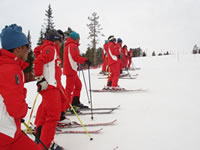Skiing
The test of the snow secured territory and a streak of escapade in man. That is the thing that joins
together together in the domain of skiing - the speediest and most entrancing winter sport.
Surrounded by the absolute most stunningly picturesque painted scenes on the planet, Manali, Himachal
Pradesh is a significant centre for the game of Skiing. Regardless of where you are, whether you are
searching for the best ski inclines, come to Manali. It offers energizing skiing open doors for both
fledglings also the expert skiers.
Angling
Angling is a wellspring of amusement to incalculable naturists having a place with distinctive strata
of the general public. Himachal, with its numerous waterways and streams, offers immeasurable open
doors for the game of angling and calculating. Whether you're the sort who preferences to string a
worm onto an alternative line and get your own particular supper, or a pure blood proficient fisherman
with the most recent in fishing supplies tackle - Himachal's waters could be an average shock.
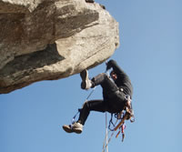Rock Climbing
Rock climbing is frequently seen as the fundamental stage for mountain climbing. Yet, this may
likewise be dealt with as an autonomous game, where the most fundamental level is climbing or diving a
rock face, utilizing just hands and feet and a well being rope.
Rock climbing camps are pointed at both the beginner and in addition the accomplished member. For the
amateur, a fundamental camp is run on outdoors, supplies arranging and administration, alongside the
chance of climbing short and long shake fixes, and polish in the craft of rappelling. For the more
accomplished, this is an open door to hone the method under the supervision of our gifted coaches and
to further the learning on different parts of mountain wellbeing.
Rappelling
Rappelling is the act of sliding down a rope to plummet a rock confront in a controlled way. The
strategy was created by climbers, yet has transformed into a game of its own. When you need to
plummet, there are fundamentally two choices: you can walk or move down, or you can rappel. At the
point when the territory is simple, strolling or moving down is the best decision. However when the
landscape gets to be excessively troublesome rappelling is the quicker, less demanding and more secure
result.
We conduct training camps in Rappelling.
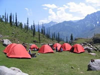Adventure Camps
Adventure camps are organized for children (10-18 years) from April-June (summer) and then again from
Sep-Oct (autumn) every year. Camp is set up near Manali and all activities are organized from there.
Starting from sightseeing of Manali town, it includes river crossing, rock climbing, rappelling, soft
trekking, etc. This is an introductory camp designed to impart outdoor housekeeping and survival
skills. During the camp, basic mountaineering techniques are taught. Participants are also introduced
to the fundamental values involved in the conservation of mountain environments. All activities are
conducted under the guidance of qualified.